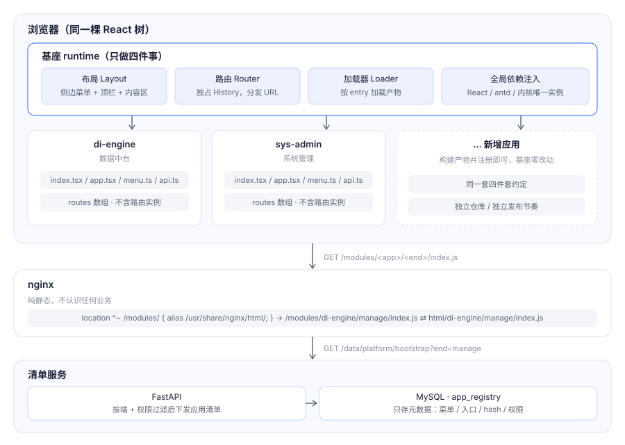
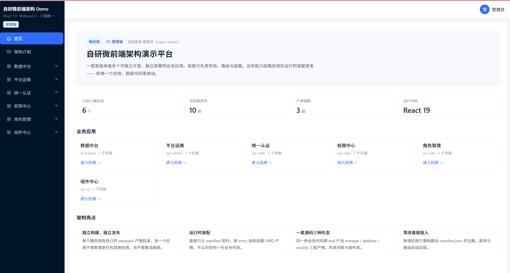
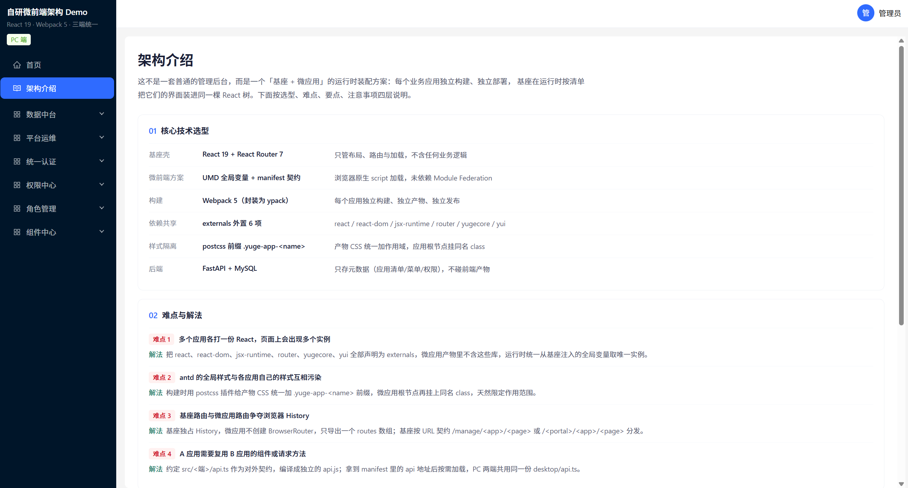
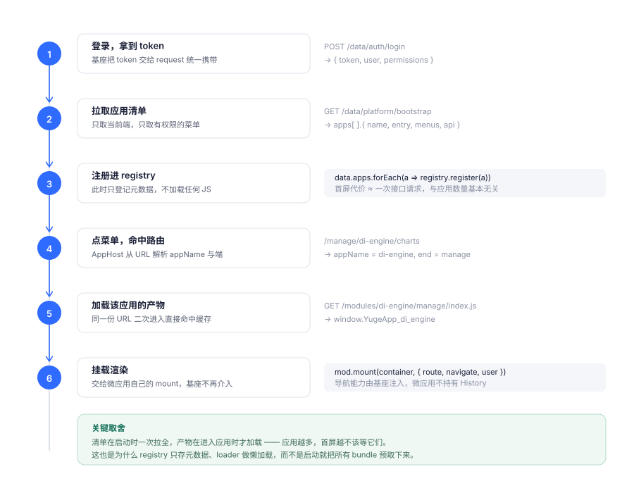
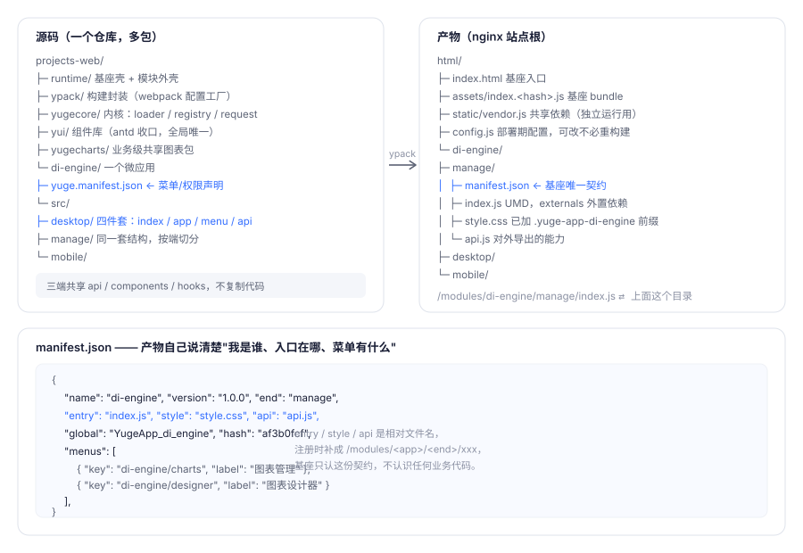
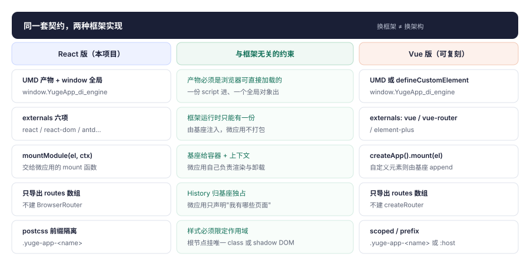

自研微前端架构：一套基座如何承载 N 个独立应用
这不是一篇介绍 qiankun 用法的文章，而是从零实现一套微前端方案的完整复盘：产物怎么设计、依赖怎么共享、路由归谁管、样式怎么隔离、部署怎么收敛。
项目本身是一个可运行的演示站（React 19 + Webpack 5 + FastAPI），但文末会说明——这套架构与框架无关，Vue 3 可以照着复刻。
一、要解决的问题
当一个后台系统从 1 个应用长到 6 个、团队从 1 个人变成 4 个人时，真正的痛点不再是「功能怎么写」，而是：
- 发布排队。A 改了
sys-admin的一个按钮，要等 B 的di-engine测完才能一起发版。 - 构建变慢。一个仓库全量打包，改一行代码冷启动要等两三分钟。
- 边界糊掉。
sys-role直接 import 了di-engine的组件，删一个模块能连带炸掉五个。 - 三端重复。同一份业务逻辑，PC 管理端、PC 门户端、移动端各写一遍。
微前端要解决的是第 1、2、3 条；第 4 条是我在这套方案里额外加的一层——同一份源码按「端」产出三套产物。
目标很明确：
- 每个应用独立目录、独立构建、独立产物、独立发布；
- 基座不感知任何业务代码，新增应用零改基座；
- 三端共用一套内核与组件库，业务代码按端切分而不是复制。
二、为什么没直接用现成方案
主流有三条路，我都评估过：
| 方案 | 优点 | 让我放弃的原因 |
|---|---|---|
| iframe | 隔离最彻底，零学习成本 | 弹窗/抽屉无法跨应用，路由和登录态要来回传，体验割裂 |
| qiankun / micro-app | 生态成熟，开箱即用 | 强约定 HTML Entry，产物形态被框架绑架；调试时中间层太多 |
| Module Federation | 原生共享依赖，构建期联邦 | 要求所有应用同时升级 Webpack 5，运行时的版本协商对老项目不友好 |
我最终选的是最土的一种：UMD 产物 + 全局变量 + 一份 JSON 契约。
理由是它足够简单——简单到任何人接手，看两个文件就能明白整个链路：
- 产物是一个 UMD bundle，加载后往
window上挂一个对象； - 基座按
manifest.json里的entry去拉这个 bundle； - 拿到全局对象，调它的
mount(container, ctx)。
没有沙箱、没有代理 window、没有 import maps。代价是要自己处理依赖共享和样式隔离（这也正是第四节的内容）。
三、整体结构

从上到下四层：
- 基座（runtime）：只做四件事——布局、路由、加载产物、注入全局依赖。它不含任何业务代码，也不知道「数据中台」是什么。
- 微应用：各自独立的 React 应用，构建成 UMD 产物，通过
mount挂进基座的容器。 - nginx：纯静态。
/modules/<app>/<end>/index.js这个 URL 靠alias映射到磁盘目录。 - 清单服务（FastAPI）：只存元数据——有哪些应用、菜单是什么、入口在哪、谁有权限看。不碰任何前端产物。
这里有个关键的分工：代码在磁盘，元数据在数据库。前端启动时问后端「我该加载谁」，拿到清单后再去 nginx 取真正的 JS。
最终跑起来是这样——左侧菜单完全由后端下发的清单渲染，基座里没有一行写死的菜单；下面四张卡片是清单里 6 个微应用各自贡献的入口：

四、六个必须做对的决策
在逐条拆解决策之前，先看演示站里那页「架构介绍」——它把这套方案的技术选型、四个最硬的难点和解法、设计要点与落地注意事项压缩在一屏里。下面六节基本就是这页内容的展开：

4.1 产物形态：UMD + 全局对象
微应用不导出 ESM，而是打成 UMD，加载后挂一个全局：
1 | window.YugeApp_di_engine = { |
为什么不用 ESM？因为基座需要在运行时决定加载哪个地址，而 import() 的路径必须是静态可分析的（或至少在打包时就确定）。用 script 标签动态注入则完全自由——地址可以来自接口、可以带时间戳、可以指向另一台机器上的 dev server。
这段逻辑在 yugecore/src/loader.ts，核心就是注入 script 并等它 load：
1 | function loadScript(src) { |
配套三件事：10 秒超时、失败重试两次、inflight Map 去重（同一个应用被快速点击两次不会重复插入 script）。
4.2 依赖共享：externals 外置，基座注入
这是最容易翻车的地方。如果每个微应用都打一份 React，页面上就会有多个 React 实例，useState 直接抛 Invalid hook call。
解决办法是在构建时把框架运行时全部外置：
1 | const APP_EXTERNALS = { |
微应用产物里不含这些库，运行时从 window 上取。谁往 window 上放？两个角色：
- 基座内运行：基座启动时注入（它自己打包了这些库）；
- 独立运行（直接打开
/<end>/页面调样式）：由static/vendor.js注入。
两条路径共用同一份契约，所以微应用在两种环境下都能跑，不需要改代码。这也是我坚持保留「独立运行页」的原因——微应用必须能脱离基座单独调试，否则每次改个按钮都要起整个平台。
注意
react/jsx-runtime也要外置。新版本 JSX 编译产物会 import 它，漏了这一个，React 还是会有两份。
4.3 路由归属：基座独占 History
第二个高频冲突点是路由。如果微应用自己 createBrowserRouter，它就会和基座抢 history，表现为地址栏乱跳、刷新 404。
规则定得很死：
- 基座独占 History，它渲染
<Routes>并持有导航能力； - 微应用只导出
routes数组，描述「我有哪些页面」，不创建任何 Router 实例； - 基座把
navigate作为上下文注入，微应用里的跳转调用它。
URL 契约固定两种形态：
1 | /manage/<app>/<page> PC 管理端 |
基座用通配路由截住，把 appName 和 end 解析出来后交给 AppHost：
1 | <Route path="/manage/:appName/*" element={<AppHost />} /> |
这样浏览器地址栏始终是基座的地址，微应用只是其中一个渲染分支——刷新不会 404，前进后退也归浏览器原生管理。
4.4 样式隔离：构建期加前缀
多个应用共用 antd，全局样式互相污染是必然的。我选了最朴素但最可控的做法：构建时就给产物 CSS 加上作用域前缀。
每个应用有个固定的 scope class（yuge-app-di-engine），Webpack 的 postcss 配置里挂一个前缀插件，产物中所有选择器自动变成：
1 | .yuge-app-di-engine .chart-card { ... } |
微应用挂载时在根节点挂上这个 class，样式天然被限定在这棵子树里。比起 Shadow DOM，这种做法兼容性好、调试直观；比起 CSS Modules，它不需要改业务代码的写法。
代价是不能用裸标签选择器和全局类名，否则会漏出作用域——这条写进了团队的编码约定里。
4.5 三端同源：用 end 切分
同一份业务代码要产出 PC 管理端、PC 门户端、移动端三套产物。做法是按端切分目录，而不是复制代码：
1 | src/ |
构建时用 end 参数决定入口与菜单：
1 | node ypack/build-app.mjs di-engine manage # → dist/di-engine/manage/ |
菜单也在 yuge.manifest.json 里按端声明，构建时只取当前端那一份：
1 | { |
有个细节值得一提：PC 两端共用同一份对外 API。desktop 和 manage 编译时都读 src/desktop/api.ts，只有 mobile 用它自己的。因为「给别的应用提供的组件」在手机端和 PC 端往往是两个东西，强行统一反而别扭。
4.6 清单与代码分离
后端只存清单，不代理产物。app_registry 表一条记录对应一个应用，多端信息存在 JSON 字段里：
1 | { |
这样做的好处：换机器、换域名只改一个配置文件（部署期的 config.js），产物和数据库都不用动。清单里的路径全是 /modules/... 这种相对路径，跟机器名无关。
五、一条完整链路

从登录到渲染，经过了这几步：
- 登录拿到 token，基座的
request统一携带； - 请求
GET /data/platform/bootstrap?end=manage，后端按端 + 权限过滤后下发应用清单； - 清单里每个应用注册进
registry（此时只登记元数据，不加载任何 JS）； - 用户点菜单，URL 变成
/manage/di-engine/charts，AppHost从 URL 解析出appName与end； loader按manifest.entry加载/modules/di-engine/manage/index.js；- 拿到
window.YugeApp_di_engine，调mount(container, ctx)渲染。
这里有一个刻意的设计：清单在启动时一次拉全，产物在进入应用时才加载。所以首屏代价基本等于一次接口请求，跟应用数量几乎无关。如果平台有 20 个应用，启动时也不会预取 20 个 bundle。
顺带一个能力：应用 A 想用应用 B 的弹窗组件，走的是 api.js 这条单独的契约——B 在 src/desktop/api.ts 里导出组件，构建成独立的 api.js，A 拿到 manifest 里的地址按需加载。这样「复用组件」不会变成「复制代码」。
六、构建产物长什么样

源码和产物的关系很简单：一个应用的一个端，对应一个目录。
1 | ├── manifest.json 契约：我是谁、入口在哪、菜单有什么 |
同一个目录里既有「给基座用的模块产物」，又有「能单独打开的完整页面」。这是我特别看重的一点：产物自己就是文档——新同学拿到一个目录，打开 index.html 就能跑起来看到界面，不用先理解整个平台。
manifest.json 是构建期自动生成的（ManifestPlugin），内容全部来自源码里的声明，不需要手写：
1 | { |
注意 entry 只是裸文件名。注册进数据库时会补成 /modules/di-engine/manage/index.js——URL 形态是注册时算出来的，不是构建时写死的，这样产物目录可以随便挪。
七、踩过的坑
这一节是真实记录，每条都花过时间。
1. 两份 React 导致的 Invalid hook call
微应用产物里残留了 react，原因是 externals 只写了 react 和 react-dom，漏了 react/jsx-runtime。新版 JSX 编译产物依赖这个入口。
2. 样式互相污染
A 应用的 .ant-card 覆盖影响了 B 应用。加 postcss 前缀后解决，但要求团队不用裸标签选择器。
3. dev server 把 404 回退成 index.html，脚本报语法错误
访问不存在的 api.js，dev server 返回 200 + HTML，浏览器当 JS 执行，控制台报 Unexpected token '<'，完全指不到真正原因。
解决：加载前先 fetch 探测 content-type，不是 JS 就跳过候选地址。
4. 静态资源缺失被 SPA 回退规则吞掉
nginx 里 try_files $uri $uri/ /index.html 会把缺失的 chunk.js 变成 200 + HTML，同上面的坑，但发生在生产环境。
解决：静态扩展名单独一条正则 location，强制 try_files $uri =404，让 404 是真 404。
5. 异步 chunk 掉在站点根目录
output 只配了 filename 没配 chunkFilename，由 import() 拆出来的 chunk 按默认 [id].js 落在产物根目录，于是站点出现 547.js 这种纯数字文件——无 hash、没有长缓存、还和配置文件混在一起。
解决：补上 chunkFilename: 'assets/[name].[contenthash:8].js'，并给 import() 加 webpackChunkName。
6. 跨应用热更曾经用轮询
为了「改了 A 应用，正在调试 B 应用的页面能自动刷新」，最初每 3 秒请求一次对方 dev server 的 manifest 拿 hash。结果是控制台被 ERR_CONNECTION_REFUSED 刷满（对方没起服务时）。
解决：改成由对方 dev server 在编译完成时通过 SSE 推事件，订阅不上就静默放弃——宁可少一个功能，不要周期性打无用请求。
八、部署：两个 location 就够
nginx 侧非常薄，核心只有两个 location：
1 | # 微应用产物：磁盘上是 html/<app>/<end>/，对外是 /modules/<app>/<end>/ |
再加一条 SPA 回退给基座（深路由刷新），以及一条静态资源的真 404 规则。
缓存策略按文件名是否带 hash 来分：
/assets/（带 contenthash）：30d immutable；/modules/、/static/、/config.js（固定文件名）：no-cache；/index.html：no-cache。
最后一条曾经踩过：基座入口页没设缓存头，浏览器启发式缓存住旧版本，替换产物后用户看到的还是旧界面——旧 bundle 还在磁盘上，页面照常能开，所以极难发现。
部署脚本做四件事：构建基座与所有应用 → 备份站点根 → 按账本清理不再产出的目录 → 铺产物 + 生成 config.js + 写部署账本。整个站点 48MB，一次发布两分钟内完成。
九、举一反三：Vue 3 也能这么干

写完这套东西之后我意识到：真正与框架绑定的只有「加载器」和「挂载函数」两个点，其余全是工程约定。所以把这套架构平移到 Vue 3 是完全可行的，只需要换三样东西：
| 环节 | React 版 | Vue 3 版 |
|---|---|---|
| 产物形态 | UMD + window.YugeApp_xxx |
UMD + 全局，或 defineCustomElement 注册自定义元素 |
| 依赖外置 | react / react-dom / jsx-runtime | vue / vue-router / element-plus（pinia） |
| 挂载 | createRoot(el).render(mod) |
createApp(mod).mount(el) 或直接 append 自定义元素 |
| 路由 | 基座独占 History，微应用报 routes |
完全相同：微应用不建 createRouter |
| 样式隔离 | postcss 前缀 .yuge-app-<name> |
同样前缀，或 :host + shadow DOM |
不变的部分恰恰是最有价值的部分：
- 一份
manifest.json契约； - 后端只存元数据，代码在磁盘；
- 路由归基座，微应用只声明页面；
- 框架运行时由基座注入唯一实例；
- 独立运行页必须保留（能脱离基座调试）。
换句话说，微前端的复杂度不在框架层，而在边界设计。想清楚「谁拥有路由、谁拥有依赖、样式怎么收敛、产物怎么描述自己」这四个问题，用 React 还是 Vue 只是 mount 函数里那几行代码的差别。
Vue 3 甚至有两个额外便利：
defineCustomElement把组件直接编译成原生自定义元素，连挂载函数都不用写，基座appendChild即可；scoped样式天然带作用域，隔离成本比 React 更低。
反过来，React 的优势在于 <Routes> 的声明式分发和 Suspense 的加载状态管理写起来更顺。
十、这套架构适合什么场景
适合：
- 应用数量 ≥ 3，且由不同人、不同节奏维护；
- 有「一个按钮的改动要等别人一起发版」的真实痛点；
- 需要同一份业务逻辑覆盖多端（PC 管理端 + 门户端 + 移动端）；
- 希望新增业务线时不动主工程。
不适合：
- 单一应用、单团队维护——微前端带来的契约成本（清单、注册、部署）会大于收益；
- 页面之间强耦合、频繁共享状态——过度拆分只会让数据流更绕；
- 团队里没人愿意维护构建工具链——这套方案的核心资产是
ypack和runtime，需要有人对它们负责。
如果只是「想试试微前端」，qiankun 十分钟就能跑起来；但如果目标是「让 4 个团队互不阻塞地发版，同时保证技术栈可以演进」，那自己写一层薄薄的契约，往往比套一层厚重的框架更划算。
附：技术栈清单
| 层 | 选型 |
|---|---|
| 基座 | React 19 + React Router 7 |
| 构建 | Webpack 5（封装为 ypack，配置工厂模式） |
| 微前端 | UMD 全局变量 + manifest 契约（自研，未用 Module Federation） |
| 组件库 | antd 6，经 @yuge/yui 统一收口 |
| 内核 | @yuge/yugecore：loader / registry / request / event |
| 后端 | FastAPI + MySQL 8（只存元数据） |
| 部署 | nginx 静态托管 + /data 反代 |
整个前端 6 个应用 × 三端 = 13 个产物目录，一次全量构建约 90 秒，站点体积 48MB。